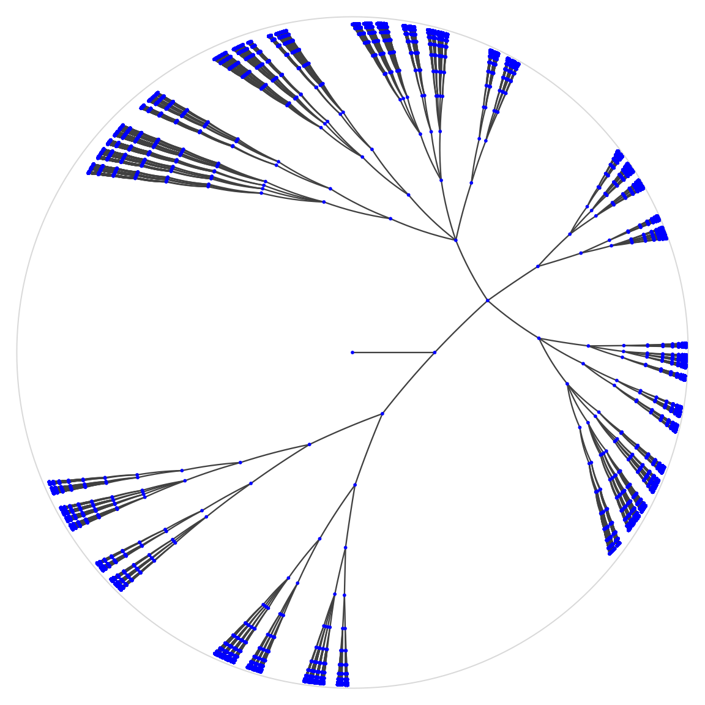
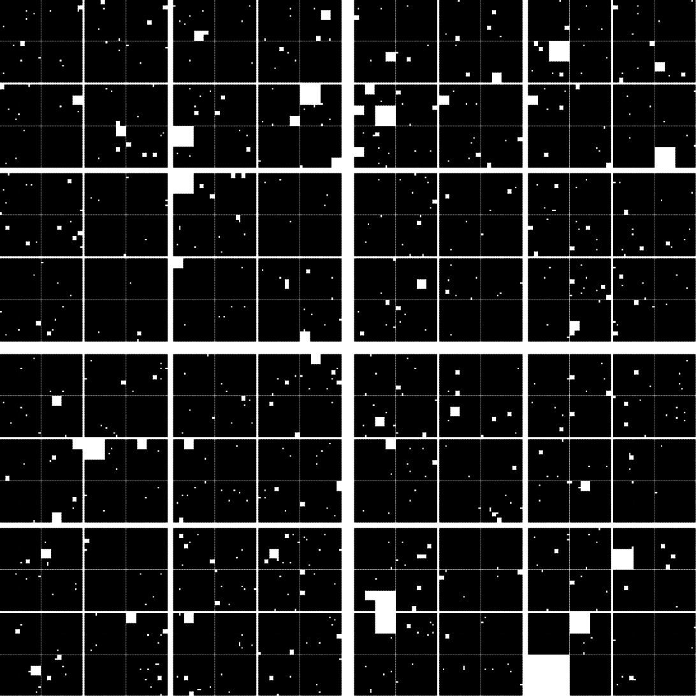

The quasi-isometry classification, embeddability, and automorphism-matching theorems for Galton–Watson trees are formally verified in Lean, partly AI-assisted.
Abstract
We classify, up to quasi-isometry, the large-scale geometry of Galton–Watson trees for every finitely supported offspring distribution. Apart from the trivial finite diameter regimes, we condition on infinite diameter. We find that the remaining classes are the ray class, the full tree class (which includes the binary tree), one chain class $(\mathrm{C}_Λ)$ for every possible branching semigroup $Λ$, and the bushy class. Two independent trees almost surely admit a root-preserving quasi-isometry when their offspring distributions belong to the same class and are almost surely not quasi-isometric when they belong to different classes. Any two survival-conditioned supercritical realisations with finitely supported offspring laws nevertheless a.s. admit quasi-isometric embeddings in both directions. We prove that the class of a realisation depends only on the support of the offspring distribution, not its specific distribution. For offspring distributions supported on $\{1,2\}$, we additionally obtain an explicit exponential tail bound for the probability of non-existence of a root-preserving $D$-quasi-isometry. The classification also implies that the corresponding random Cantor boundaries are almost surely quasisymmetrically equivalent. Conditioned on nonextinction, this applies to strongly separated fractal percolation, even when the underlying self-similar iterated function systems and retention parameters differ. We also classify two families of trees with continuous random branching times. Our proofs use new automorphism-matching theorems for random graph labellings of trees, based on contraction estimates for mismatch potentials. These matching results for Markov labellings on the binary tree may be of independent interest. The quasi-isometry classification, embeddability, and matching theorems are formally verified in Lean.
Problem
Galton–Watson trees with finitely supported offspring distributions are classified up to quasi-isometry, but a rigorous account of the large-scale geometry and matching arguments is intricate. The paper seeks a complete classification together with embeddability and boundary consequences.
Approach
The authors classify realisations into ray, full tree, chain, and bushy classes, showing membership depends only on the support of the offspring distribution. Proofs proceed via a scheme reducing quasi-isometry to automorphism matching of quantised random labellings on binary trees. New automorphism-matching theorems for random and Markov graph labellings, based on contraction estimates for mismatch potentials, underpin the results. The classification, embeddability results, and matching theorems are formally verified in Lean, with AI-assisted formalisation workflows (vibefeld and a custom pipeline).

Figure 1. Finite truncations illustrating the three non-ray infinite regimes, embedded in the Poincaré disc. Regime (R) is omitted. The top row shows regime (F), with support \{2,3,4\} , and regime (B), with support \{0,1,2,3\} . The middle row shows regime (B), with support \{0,1,2,3,4\} , and (\mathrm{C}_{\langle 1\rangle}) , with support \{1,2\} . The bottom row shows (\mathrm{C}_{\langle 2\ran
Results
Two independent trees admit root-preserving quasi-isometries iff they share a class; supercritical survival-conditioned trees mutually quasi-isometrically embed. An explicit exponential tail bound is obtained for offspring supported on {1,2}, and random Cantor boundaries (including strongly separated fractal percolation) are almost surely quasisymmetrically equivalent.

Figure 2. Finite approximations to two fractal percolation realisations for the IFS formed by the four corner similarities of ratio 0.49 . The retention probabilities are 0.99 on the left and 0.7 on the right.